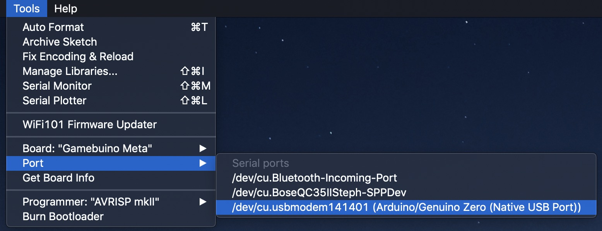
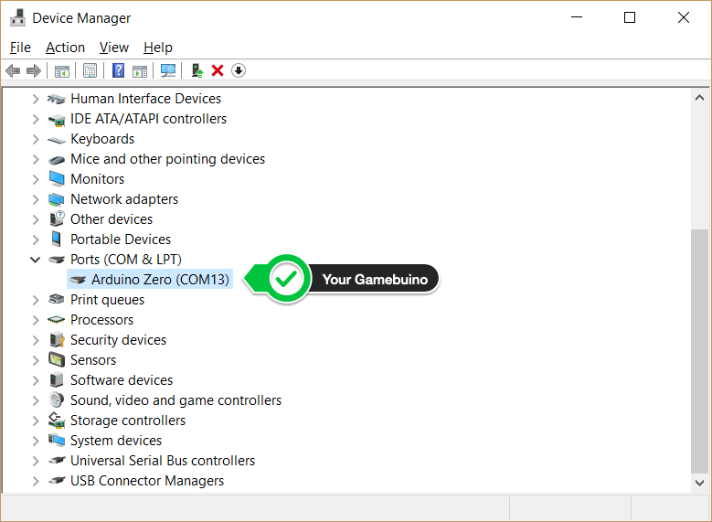
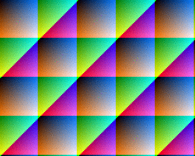

<!doctype html>
<html lang="fr">
 <head> 
  <meta http-equiv="Content-Type" content="text/html; charset=UTF-8"> 
  <title>Apprendre à coder un jeu vidéo - Gamebuino</title> 
  <link rel="stylesheet" href="https://maxcdn.bootstrapcdn.com/bootstrap/4.0.0/css/bootstrap.min.css" integrity="sha384-Gn5384xqQ1aoWXA+058RXPxPg6fy4IWvTNh0E263XmFcJlSAwiGgFAW/dAiS6JXm" crossorigin="anonymous"> 
  <link href="https://fonts.googleapis.com/css?family=Lato|Open+Sans:300,400,600,700,800|Roboto+Mono:300,400,700" rel="stylesheet"> 
  <link rel="stylesheet" href="https://pro.fontawesome.com/releases/v5.6.3/css/all.css" integrity="sha384-LRlmVvLKVApDVGuspQFnRQJjkv0P7/YFrw84YYQtmYG4nK8c+M+NlmYDCv0rKWpG" crossorigin="anonymous"> 
  <link rel="stylesheet" href="https://cdnjs.cloudflare.com/ajax/libs/highlight.js/9.12.0/styles/default.min.css"> 
  <link href="../css/animate.css" rel="stylesheet" type="text/css"> 
  <link href="../css/generic.css" rel="stylesheet" type="text/css"> 
  <link href="../css/jquery-ui.min.css" rel="stylesheet" type="text/css"> 
  <link href="../css/jquery-ui-timepicker-addon.css" rel="stylesheet" type="text/css"> 
  <link href="../css/alertify.core.css" rel="stylesheet" type="text/css"> 
  <link href="../css/alertify.default.css" rel="stylesheet" type="text/css"> 
  <link href="../css/select2.min.css" rel="stylesheet" type="text/css"> 
  <link href="../css/app.css" rel="stylesheet" type="text/css"> 
  <script src="https://code.jquery.com/jquery-3.3.1.min.js" integrity="sha256-FgpCb/KJQlLNfOu91ta32o/NMZxltwRo8QtmkMRdAu8=" crossorigin="anonymous"></script> 
  <script src="https://cdnjs.cloudflare.com/ajax/libs/popper.js/1.12.9/umd/popper.min.js" integrity="sha384-ApNbgh9B+Y1QKtv3Rn7W3mgPxhU9K/ScQsAP7hUibX39j7fakFPskvXusvfa0b4Q" crossorigin="anonymous"></script> 
  <script src="https://maxcdn.bootstrapcdn.com/bootstrap/4.0.0/js/bootstrap.min.js" integrity="sha384-JZR6Spejh4U02d8jOt6vLEHfe/JQGiRRSQQxSfFWpi1MquVdAyjUar5+76PVCmYl" crossorigin="anonymous"></script> 
  <script src="../js/jquery.cookie.js" type="text/javascript"></script> 
  <script src="../js/alertify.min.js" type="text/javascript" async></script> 
  <script src="../js/modal.js" type="text/javascript" async></script> 
  <script src="../js/popupConfirm.js" type="text/javascript" async></script> 
  <script src="../js/select2.min.js" type="text/javascript" async></script> 
  <script src="../js/imagesloaded.pkgd.min.js" type="text/javascript" async></script> 
  <script src="../js/wow.min.js" type="text/javascript" async></script> 
  <script src="../js/app.js" type="text/javascript" async></script> 
  <script id="js_highlight" src="https://cdnjs.cloudflare.com/ajax/libs/highlight.js/9.12.0/highlight.min.js" async></script> 
  <script>js_highlight.addEventListener('load',function(){$('div.code, pre').each(function(i,block){hljs.highlightBlock(block);});});</script> 
  <link href="https://fonts.googleapis.com/css?family=Open+Sans+Condensed:300,700&amp;display=swap" rel="stylesheet"> 
 </head> 
 <body> 
  <div class="topbar-container w-100 m-0"> 
   <nav class="primary-navbar"> 
    <div id="root-logo"> <a href="/gamebuino/">  </a> 
    </div> 
    <ul class="nav nav-pills"> 
     <li class="text-uppercase"> <a href="/gamebuino/academy-fr/"> Home of Academy (FR)</a></li> 
    </ul> 
   </nav> 
   <div class="container" id="main-content">
    <div class="container"> 
     <div class="row align-items-stretch"> 
      <div class="col-md-7 col-lg-8 d-flex flex-column justify-content-between"> 
       <h1>Générez des GIF animées à partir de captures d'écrans vidéos</h1> 
       <p> </p> 
       <p>Vous développez un nouveau jeu ? Vous êtes fier de votre nouvelle création et vous voulez sans plus tarder en faire la démonstration sur Discord ou sur notre site Internet ? Vous aurez probalement envie de faire une GIF animée pour exhiber votre chef-d’œuvre à toute la communauté. Alors, apprenez à maîtriser <strong>META Screen Recorder</strong> : un nouvel outil de capture pour la META.</p> 
       <p></p> 
       <div class="d-flex align-item-center"> 
        <div class="mr-3 language-tag language-0"> 
        </div> 
        <p class="ml-3 mb-0"> <i class="fal fa-tachometer-fastest fa-fw difficulty-3"></i> Avancé</p> 
        <p class="ml-3 mb-0"> <i class="fal fa-clock fa-fw"></i> 1h</p> 
       </div> 
      </div> 
      <div class="col-md-5 col-lg-4 mt-3 mt-md-0 d-flex align-items-center"> 
       <div class="image" style="background-image:url(../assets/86976ee6926ea98f9e95d6745386ab71.gif)"> 
       </div> 
      </div> 
     </div> 
    </div> 
    <div class="container"> 
     <div class="d-flex align-items-center"> <a href="/gamebuino/" > Académie</a> 
      <div class="ml-3 mr-3"> <i class="fal fa-angle-right"></i> 
      </div><span> Générez des GIF animées à partir de captures d'écrans vidéos</span> 
     </div> 
    </div> 
    <div class="mt-5"> 
     <div class="lesson-content"> 
      <h2>Aperçu général</h2> 
      <p>Vous allez apprendre ici à configurer et utiliser <strong>META Screen Recorder</strong> pour tous vos projets Gamebuino. Cet utilitaire vient compléter l'outil de capture intégré à la META (accessible par le bouton <strong>Home</strong>), pour vous offrir plus de souplesse, plus de simplicité et plus de fonctionnalités&nbsp;:</p> 
      <ul> 
       <li> <p>Vous allez pouvoir déclencher ou arrêter l’enregistrement de l'écran quand bon vous semble. En effet, vous n'aurez plus à interrompre le déroulement de votre application pour lancer un enregistrement. Un simple appui prolongé sur le bouton <strong>Menu</strong> suffit. Et pour stopper l'enregistrement&nbsp;? Rappuyez brièvement sur le bouton <strong>Menu</strong>. C'est aussi simple que ça&nbsp;!</p> </li> 
       <li> <p>Vous pourrez aussi déclencher et arrêter l'enregistrement directement dans votre code&nbsp;! Cette fonctionnalité vous permettra d'enregistrer une scène de jeu avec plus de précision, ou lorsque certains événements particuliers surviennent (ne ratez plus le moment où vous mettez le <em>boss</em> KO).</p> </li> 
       <li> <p>Vous pourrez également profiter des pleines capacités de la META et enregistrer vos applications qui tournent en Haute Résolution&nbsp;!</p> </li> 
      </ul> 
      <p>Pour mettre en application ce que vous allez apprendre ici, vous devez naturellement posséder une Gamebuino META, qui est indispensable pour pouvoir effectuer un enregistrement.</p> 
      <h3>Démonstration</h3> 
      <p>Voici une démonstration du processus d'enregistrement réalisé avec <strong>META Screen Recorder</strong>&nbsp;:</p> <iframe width="720" height="405" style="display:block;margin:1.5em auto;box-shadow:0 4px 8px #aaa;" src="https://www.youtube.com/embed/C85M7hLqs0g" frameborder="0" allow="accelerometer; autoplay; encrypted-media; gyroscope; picture-in-picture" allowfullscreen></iframe> 
      <h3>Architecture</h3> 
      <p><strong>META Screen Recorder</strong> s'articule autour de deux composants&nbsp;:</p> 
      <ul> 
       <li> <p><code>ScreenRecorder</code>&nbsp;: une classe C++ que vous devrez intégrer dans votre projet. Cette classe se charge d'envoyer toutes les données d'affichage, pendant l'exécution de votre application, sur le port série lorsque votre console est connectée à votre ordinateur via un câble USB.</p> </li> 
       <li> <p><code>screenrecord</code>&nbsp;: un script PHP autonome que vous devrez installer et exécuter sur votre ordinateur pour réceptionner toutes les données envoyées par la META sur le port série. Ce script se charge de décoder toutes les données qu'il reçoit et de reconstruire les captures d'écrans qui se succèdent pour les enregistrer dans des fichiers PNG.</p> </li> 
      </ul> 
      <p>Il ne vous restera plus, ensuite, qu'à compiler l'ensemble de ces fichiers PNG avec un outil spécialisé (<strong>ImageMagick</strong>) pour générer une magnifique GIF animée restituant fidèlement ce qui s'est déroulé sur l'écran de la console.</p> 
      <h3>Environnement logiciel prérequis</h3> 
      <p>Pour pouvoir utiliser <strong>META Screen Recorder</strong> et générer des GIF animées, vous aurez besoin d'installer les logiciels libres suivants sur votre ordinateur&nbsp;:</p> 
      <ul> 
       <li> <p><strong>PHP 7.x</strong> en version <strong>CLI</strong> (<em>Command Line Interface</em>), c’est-à-dire accessible depuis votre interpréteur de commandes.</p> </li> 
       <li> <p>L'extension <strong>GD</strong> pour PHP, qui permet de générer des images dans un grand choix de formats.</p> </li> 
       <li> <p><strong>ImageMagick</strong>, qui comprend une bibliothèque et un ensemble d’utilitaires en ligne de commande permettant de créer, de convertir, de modifier et d’afficher des images dans un très grand nombre de formats.</p> </li> 
      </ul> 
      <p>Nous ne détaillerons pas ici les procédures d'installation de ces logiciels.<br> Néanmoins, vous pourrez trouver ces procédures <span>sur la documentation détaillée de <strong>META Screen Recorder</strong></span>.</p> 
      <p>Avant de continuer, assurez-vous d'avoir bien installé ces différents logiciels.<br> Pour le vérifier, ouvrez un interpréteur de commandes et exécutez les commandes suivantes&nbsp;:</p> 
      <pre><code>$ php -v              # affiche la version de PHP qui est installée
$ php -m              # affiche la liste des extensions installées pour PHP
$ convert -version    # affiche la version d'ImageMagick qui est installée
</code></pre> 
      <h2>Téléchargement de la classe ScreenRecorder</h2> 
      <p>Nous allons maintenant intégrer la classe <code>ScreenRecorder</code> à votre projet C++.<br> Commencez par télécharger les deux fichiers suivants (clic-droit + <em>Enregistrez le lien sous...</em>)&nbsp;:</p> 
      <ul> 
       <li> <span>ScreenRecorder.h</span> </li> 
       <li> <span>ScreenRecorder.cpp</span> </li> 
      </ul> 
      <p>Une fois téléchargés, placez ces deux fichiers à la racine du répertoire de votre projet Gamebuino.</p> 
      <h2>Configuration de l'enregistrement manuel</h2> 
      <p>Rappelons ici que <strong>META Screen Recorder</strong> vous permet d'effectuer des captures d'écrans de deux manières&nbsp;:</p> 
      <ul> 
       <li>Manuellement, en utilisant le bouton <strong>Menu</strong>* pour déclencher et arrêter l'enregistrement.</li> 
       <li>Automatiquement, en insérant des instructions dans le code pour déclencher et arrêter l'enregistrement.</li> 
      </ul> 
      <p>* <em>Vous êtes libre de modifier le code de la classe <code>ScreenRecorder</code> si vous souhaitez redéfinir une combinaison de boutons de votre choix à la place du bouton <strong>Menu</strong>.</em></p> 
      <p>Intéressons-nous, dans un premier temps, à la procédure d'enregistrement <strong>manuelle</strong>.</p> 
      <p>Souvenez-vous, <code>ScreenRecorder</code> est capable d'effectuer des captures d'écrans dans la résolution standard (<code>80x64</code>), mais également en haute résolution (<code>160x128</code>). Nous allons distinguer ici ces deux cas de figure.</p> 
      <h3>Pour la résolution standard</h3> 
      <p>Ouvrez votre croquis principal et insérez les lignes suivantes&nbsp;:</p> 
      <pre><code>#include &lt;Gamebuino-Meta.h&gt;
#include "ScreenRecorder.h" // &lt;-- insérez cette ligne

void setup() {
    gb.begin();
    // vos instructions
    // d'initialisation
    ScreenRecorder::init();          // &lt;-- insérez cette ligne
    ScreenRecorder::setForWindows(); // &lt;-- insérez aussi celle-ci si vous êtes sur Windows
}

void loop() {
    while (!gb.update());
    // vos instructions qui peuvent
    // effectuer des tracés à l'écran
    // en utilisant gb.display
    ScreenRecorder::monitor(gb.display._buffer); // &lt;-- insérez cette ligne
}
</code></pre> 
      <p>C’est tout ce que vous avez à faire&nbsp;!… Simple, nan&nbsp;?</p> 
      <blockquote> 
       <p><strong>Remarque importante à propos de Windows</strong></p> 
       <p>L'implémentation de la fonction PHP <strong>fread</strong> sous Windows est buguée : en effet, le tampon de lecture ne révèle les données accumulées que par paquets de 8K. Par conséquent, nous sommes contraints d'employer une astuce pour nous affranchir de ce bug. Donc il est <strong>impératif</strong> d'ajouter la ligne suivante pour préciser que la réception des données sera effectuée sur Windows&nbsp;:</p> 
       <pre><code>ScreenRecorder::setForWindows();
</code></pre> 
       <p>Si vous êtes sur macOS ou Linux, <strong>ne rajoutez pas</strong> cette ligne.</p> 
      </blockquote> 
      <h3>Pour la haute résolution</h3> 
      <p>Dans le cas d’une application développée pour la haute résolution, les choses sont un peu différentes. En effet, vous ne pourrez pas utiliser les méthodes d’affichage traditionnelles offertes par <code>gb.display</code>... Je vous encourage à lire l’excellent article d’<span>Andy</span> sur le sujet&nbsp;: <span>High Resolution without gb.display</span>, qui vous explique sommairement les raisons pour lesquelles ça n’est pas possible et vous livre une méthode de contournement qui consiste à utiliser directement <code>gb.tft</code>.</p> 
      <p>J’ai rédigé un tutoriel très complet sur l’approfondissement de cette technique. Vous pouvez le lire si cela vous intéresse (les débutants auront peut-être quelques difficultés à tout assimiler)&nbsp;: <span>Éclairage Tamisé en Haute Résolution</span>. Il vous permettra de comprendre en profondeur comment appliquer cette technique dans vos applications.</p> 
      <p>Prenons le cas de l'exemple issu de l'article d'Andy, que j'ai légèrement modifié pour l'adapter à un découpage de l'écran en tranches horizontales. Téléchargez le code <span>SketchExampleForHD.ino</span> (clic-droit + <em>Enregistrez le lien sous...</em>), créez un nouveau répertoire et placez-y le code source téléchargé.</p> 
      <p>Puis ouvrez le croquis <code>SketchExampleForHD.ino</code> et vérifiez que les lignes suivantes y figurent bien&nbsp;:</p> 
      <pre><code>#include &lt;Gamebuino-Meta.h&gt;
#include "ScreenRecorder.h" // &lt;-- chargement de la classe ScreenRecorder

void setup() {
    gb.begin();
    gb.display.init(0, 0, ColorMode::rgb565);
    gb.setFrameRate(32);
    ScreenRecorder::init(SLICE_HEIGHT); // &lt;-- initialisation de ScreenRecorder
    ScreenRecorder::setForWindows();    // &lt;-- !!! insérez cette ligne si vous êtes sur Windows !!!
}

void loop() {
    while (!gb.update());
    for (
        uint8_t sliceIndex = 0;
        sliceIndex &lt; SCREEN_HEIGHT / SLICE_HEIGHT;
        sliceIndex++
    ) {
        // 
        // à la fin de la boucle...
        // 
        customDrawBuffer(0, sliceY, buffer, SCREEN_WIDTH, SLICE_HEIGHT);
        ScreenRecorder::monitor(buffer, sliceIndex); // &lt;-- monitoring de l'écran
    }
    waitForPreviousDraw();
}
</code></pre> 
      <p>Vous remarquerez que, contrairement à la configuration pour une résolution standard&nbsp;:</p> 
      <ul> 
       <li> <p>on initialise <code>ScreenRecorder</code> en lui transmettant la hauteur des tranches de découpage de l’écran,</p> </li> 
       <li> <p>et on lui transmet également l’indice de la tranche courante pendant le monitoring de l’écran&nbsp;: c’est nécessaire pour qu’il démarre la transmission vers le script PHP dès qu’il détecte la première tranche (celle d’indice zéro).</p> </li> 
      </ul> 
      <p>Par ailleurs, vous voyez que c’est uniquement après avoir terminé de remplir le tampon de la tranche courante que l’on invoque <code>ScreenRecorder::monitor()</code>. En effet, à ce moment là, tous les tracés sur la tranche courante qui sont destinés à être envoyés à l'écran par le biais du contrôleur DMA ont été réalisés.</p> 
      <blockquote> 
       <p><strong>Remarque importante</strong></p> 
       <p>Lors de l’initialisation de ScreenRecorder, notez que la hauteur des tranches doit nécessairement être une puissance de 2 non nulle, dont la valeur maximale est 16... donc seules les valeurs 2, 4, 8 et 16 seront prises en compte. Si vous utilisez une valeur supérieure à 16, l’enregistrement sera simplement désactivé. Et si vous utilisez une valeur inférieure à 16 qui n’est pas une puissance de 2, vous obtiendrez un enregistrement… plutôt bizarre</p> 
       <p>Je vous conseille d’utiliser la valeur 8 qui ne nécessite que 2 x 2,5 = 5 ko en RAM.</p> 
      </blockquote> 
      <h2>Configuration de l’enregistrement automatique</h2> 
      <p>Plutôt que de déclencher et arrêter l'enregistrement à l'aide du bouton <strong>Menu</strong>, vous pouvez également le faire de manière automatique en insérant les instructions correspondantes directement dans votre code. Ceci peut s’avérer très pratique lorsque vous souhaitez déclencher ou stopper l’enregistrement à des moments précis, ou encore lorsque certains événements se produisent. Pour cela, il vous suffit d’insérer chacune des deux instructions suivantes aux endroits appropriés&nbsp;:</p> 
      <pre><code>ScreenRecorder::startRecording(); // pour lancer l'enregistrement
ScreenRecorder::stopRecording();  // pour stopper l'enregistrement
</code></pre> 
      <h2>Téléchargement du script PHP screenrecord</h2> 
      <p>Il ne nous reste plus qu'à télécharger et installer le script PHP <code>screenrecord</code> sur votre ordinateur pour réceptionner les données envoyées sur le port série par la classe <code>ScreenRecorder</code>, et convertir ces données en une série de fichiers PNG.</p> 
      <p>Commencez par télécharger le script (clic-droit + <em>Enregistrez le lien sous...</em>)&nbsp;: <span>screenrecord</span><br> Et placez-le également dans le dossier de votre projet.</p> 
      <p>Notez, en passant, que plutôt que de dupliquer systématiquement le script <code>screenrecord</code> dans chacun de vos projets, il est tout à fait possible de l'installer de manière globale dans votre espace utilisateur ou au sein de votre système. Cette procédure est détaillée <span>dans la documentation de META Screen Recorder</span>.</p> 
      <p>Ensuite, ouvrez un interpréteur de commandes, placez-vous dans le dossier de votre projet, et vérifiez que vous êtes bien en mesure d'exécuter le script&nbsp;:</p> 
      <h3>macOS &amp; Linux</h3> 
      <pre><code>$ cd ~/path/to/your/project/folder # on se place dans le bon répertoire
$ chmod u+x screenrecord           # on autorise l'exécution du script
$ ./screenrecord -h                # on lance le script avec l'option help
</code></pre> 
      <h3>Windows</h3> 
      <pre><code>$ cd C:\path\to\your\project\folder # on se place dans le bon répertoire
$ php screenrecord -h               # on lance le script avec l'option help
</code></pre> 
      <p>Vous devriez obtenir la sortie suivante&nbsp;:</p> 
      <pre><code>+---------------------------------------+
|    Gamebuino META Screen Recorder     |
| © 2019 Stéphane Calderoni (aka Steph) |
|     https://gamebuino.com/@steph      |
+---------------------------------------+

Usage: screenrecord [options]

DESCRIPTION

	This utility records the Gamebuino META screen in Standard &amp; High Definition
	using communication through a serial port

OPTIONS

	-h  displays the synopsis
	-p  sets the serial port (default: /dev/cu.usbmodem141401)
	-d  sets the output directory (default: current directory)
	-b  sets the image files basename (default: frame)
	-n  sets the number of digits to number the image files (default: 4)

ANIMATED GIF CREATION

	You must have imagemagick installed to be able to create the animated GIF file.
	For example, to create an animation with a resolution of 160x128 pixels at 25&nbsp;fps,
	simply type the following command:

	convert -delay 4 -loop 0 png_dir_path/*.png -scale 160x128 screenrecording.gif

</code></pre> 
      <p>L'option <code>-h</code> vous détaille la manière d'utiliser le script.<br> Nous nous intéresserons principalement ici aux options suivantes&nbsp;:</p> 
      <ul> 
       <li> <code>-p</code>&nbsp;: qui permet de spécifier l'identifiant du port série sur lequel est connecté la META</li> 
       <li> <code>-d</code>&nbsp;: qui permet de spécifier le répertoire dans lequel seront enregistrés les fichiers PNG</li> 
      </ul> 
      <p>Nous allons tout de suite créer un répertoire pour y enregistrer les fichiers PNG et éviter de mettre le boxon dans le répertoire de votre projet. Nous nommerons ce répertoire <code>frames</code>&nbsp;:</p> 
      <pre><code>$ mkdir frames
</code></pre> 
      <h2>Identifier le port série</h2> 
      <p>Pour déterminer sur quel port série est connectée votre META, lancez l'IDE Arduino et rendez-vous dans le menu <strong>Tools</strong>&nbsp;:</p> 
      <div style="width:600px;max-width:100%;margin:1.5em auto;box-shadow:0 4px 8px #aaa;"> 
        
      </div> 
      <p><strong>Remarque concernant Windows</strong></p> 
      <p>Vous devrez préalablement aller jeter un coup d’oeil dans le <strong>Gestionnaire de périphériques</strong> pour identifier le bon port&nbsp;:</p> 
      <div style="width:600px;max-width:100%;margin:1.5em auto;box-shadow:0 4px 8px #aaa;"> 
        
      </div> 
      <h2>Lancer l'enregistrement</h2> 
      <p>Compilez et téléchargez votre projet sur votre Gamebuino. Attendez que l'application se lance, puis lancez le script <code>screenrecord</code> pour qu'il se mette en écoute sur le port série (en indiquant le bon port)&nbsp;:</p> 
      <pre><code>$ ./screenrecord -d frames -p /dev/cu.usbmodem141401  # &lt;-- macOS &amp; Linux
$ php screenrecord -d frames -p COM13                 # &lt;-- Windows 10
</code></pre> 
      <p>Ensuite, appuyez longuement (au moins 1 seconde) sur le bouton <strong>Menu</strong> de la META pour lancer l'enregistrement. Vous remarquerez que les LEDs de la console émettent des flashs rouges à intervalles réguliers. Cela signifie qu’elle est bel et bien en train d’envoyer les données d’enregistrement sur le port série. Dans le même temps, vous verrez sur votre interpréteur de commande que le script réceptionne bien ces données et les enregistre dans l’ordre d’arrivée des captures. Vous devriez observer quelque-chose dans ce goût là&nbsp;:</p> 
      <pre><code>Start listening to the serial port /dev/cu.usbmodem141401

Waiting for data... Start screen recording in high resolution

Decoding frame 0001... saved
Decoding frame 0002... saved
Decoding frame 0003... saved
Decoding frame 0004... saved
Decoding frame 0005... saved
Decoding frame 0006... saved
Decoding frame 0007... saved
Decoding frame 0008... saved
Decoding frame 0009... saved
Decoding frame 0010... saved
.
.
.
</code></pre> 
      <p>Pour arrêter l’enregistrement, rappuyez brièvement sur le bouton <strong>MENU</strong>... Les LEDs s’éteignent, le flux de données s’interrompt et le script s’arrête&nbsp;:</p> 
      <pre><code>.
.
.
Decoding frame 0100... saved
Decoding frame 0101... saved
Decoding frame 0102... saved
Decoding frame 0103... saved
Decoding frame 0104... saved
Decoding frame 0105... saved
Decoding frame 0106... saved

106 PNG files have been recorded in 160x128 (high resolution).

You must have imagemagick installed to convert these PNG files into an animated GIF file.
For a 25&nbsp;fps animation, simply type the following command:

convert -delay 4 -loop 0 frames/*.png -scale 160x128 screenrecording.gif
</code></pre> 
      <p>Vous pouvez d'ores et déjà vérifier que le script a bien enregistré une séquence de fichiers PNG dans le répertoire <code>frames</code>&nbsp;:</p> 
      <pre><code>$ ls -l frames  # &lt;-- macOS &amp; Linux
$ dir frames    # &lt;-- Windows
</code></pre> 
      <p>La commande permettant de générer une GIF animée à partir de la série de captures vous est indiquée&nbsp;:</p> 
      <pre><code>$ convert -delay 4 -loop 0 frames/*.png -scale 160x128 screenrecording.gif
</code></pre> 
      <p><strong>Remarque sur l’option <code>delay</code></strong></p> 
      <p>La valeur <code>N</code> attendue par l’option <code>delay</code> est un entier qui correspond à une fréquence d’animation de <code>100/N</code>&nbsp;fps. Donc, si <code>N=4</code>, votre GIF animée aura une fréquence de <code>100/4 = 25</code>&nbsp;fps.</p> 
      <p>Dans le cas de notre exemple <code>SketchExampleForHD.ino</code> pour la haute résolution, souvenez-vous que nous avions fixé un framerate de <code>32</code>&nbsp;fps&nbsp;:</p> 
      <pre><code>gb.setFrameRate(32);
</code></pre> 
      <p>Donc pour que notre GIF respecte <em>grosso modo</em> cette fréquence, nous devrons plutôt fixer <code>N=3</code>. Par ailleurs, on peut tout à fait générer une image avec des dimensions différentes de celles de la capture originale. Par exemple, passons de <code>(160x128)</code> à <code>(320x256)</code>&nbsp;:</p> 
      <pre><code>$ convert -delay 3 -loop 0 frames/*.png -scale 320x256 screenrecording.gif
</code></pre> 
      <p>Et nous obtenons le fichier <code>screenrecording.gif</code> dont voici&nbsp;le superbe contenu&nbsp;:</p> 
      <div style="width:320px;max-width:100%;margin:1.5em auto;box-shadow:0 4px 8px #ccc;"> 
        
      </div> 
      <p><strong>Remarque</strong></p> 
      <p>J’ai un peu triché… <i class="far fa-smile-wink"></i> j’ai supprimé les frames superflus pour que l’animation en boucle soit parfaitement raccord... (il suffit ici de ne conserver que les 64 premiers frames). Il est en effet encore possible de corriger votre enregistrement, en supprimant des frames, ou en les réordonnant si nécessaire. Pratique, nan&nbsp;?</p> 
      <h2>Le mot de la fin</h2> 
      <p>Voilà, nous sommes arrivés au terme de ce petit tuto. Vous devriez maintenant être en mesure de faire des captures vidéos de tous vos projets avec <strong>META Screen Recorder</strong>. J’espère que cet outil vous sera utile. J’en avais moi-même un grand besoin, et je suis très content de pouvoir le partager aujourd’hui. Si vous relevez des dysfonctionnements, si vous entrevoyez des améliorations possibles, ou si vous voulez me montrer les captures dont vous êtes le plus fier, n’hésitez pas à me laisser un petit commentaire <span>sur la page de cette création</span>&nbsp;!</p> 
      <p>Le code de la classe <code>ScreenRecorder</code> et celui du script <code>screenrecord</code> sont à votre disposition <span>sur mon dépôt GitHub</span>. Vous pouvez les modifier librement, et si vous les améliorez, on compte sur vous pour nous en faire profiter&nbsp;!</p> 
     </div> 
    </div> 
    <div class="workshop-author"> 
     <div class="container"> 
      <h4>L'auteur</h4> 
      <div class="mt-4 d-flex"> 
        
       <div class="ml-3"> 
        <h5>Steph</h5> 
        <p> https://gamebuino.m1cr0lab.com</p> 
        <p> <span class="bold"> Voir son profil</span></p> 
       </div> 
      </div> 
     </div> 
    </div>
   </div> 
   <footer id="footer"> 
    <div class="container"> 
     <div class="reinsurance"> 
      <div class="row align-items-center"> 
       <div class="col-sm-3"> 
        <p class="text-left"></p> 
       </div> 
       <div class="col-sm-6"> 
        <p class="text-center">Academy saved on October 8, 2020</p> 
       </div> 
       <div class="col-sm-3"> 
        <p class="text-right"></p> 
       </div> 
      </div> 
     </div> 
     <div class="row"> 
      <div class="col-sm-4 margeur-50"> 
       <ul class=""> 
        <li class="margeur-20"><h5 style="color:white;">Exported by :</h5></li> 
        <li> <a href="https://chris-scientist.github.io">chris-scientist</a></li> 
       </ul> 
      </div> 
      <div class="col-sm-4 margeur-50"> 
       <ul class=""> 
        <li class="margeur-10"> <a href="/gamebuino/why-this-website/">Why this website ?</a></li> 
        <li class="margeur-10"> <a href="/gamebuino/contact/">Contact</a></li> 
       </ul> 
      </div> 
      <div class="col-sm-4 margeur-50"> 
       <h6 class="footer-h6">Exported from official website</h6> 
      </div> 
     </div> 
    </div> 
   </footer>  
  </div>
 </body>
</html>